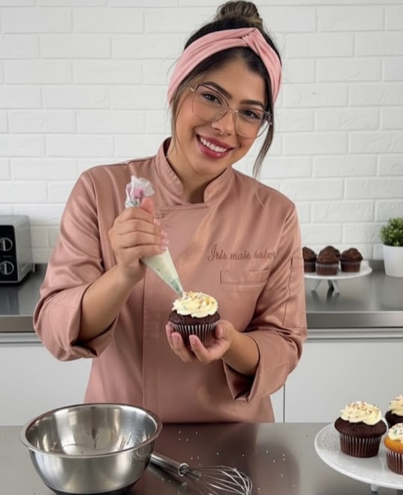

Uma trajetória de recomeço, amor pela confeitaria e transformação.

A confeitaria sempre esteve presente na minha vida mesmo antes de eu perceber. Desde pequena, eu era aquela que ficava na cozinha ao lado da minha mãe, observando tudo, esperando uma chance de mexer a massa, ajudar no fogão… Eu já amava aquilo, mesmo sem entender que ali nascia um sonho.
E existe uma lembrança que hoje carrega um significado que eu nunca imaginei e chega ser engraçado kk.
Quando eu era criança, passava uma novela onde uma mulher vendia brigadeiros na rua para pagar a faculdade do filho. Era uma história difícil… sofrida.
E, em tom de brincadeira, meu irmão olhava pra mim e dizia: “olha você ali”.
E eu respondia, sem pensar duas vezes: “não… eu não vou ser isso.”
Porque, pra mim, aquilo não era sonho. Era luta demais. Era dor demais. Mas o tempo ensina. E a vida ressignifica.
Hoje, eu vendo não só brigadeiros, vendo doces e bolos. Mas não com sofrimento. Com amor. Não por falta de opção. Mas por propósito.
E tudo começou quando o mundo parou… e eu precisei recomeçar.
Na pandemia, me vi sem trabalho, sem direção, com medo e cheia de incertezas. Foi ali que nasceu a minha virada.
Comecei com algo simples: bolos no copo e, contra todos os meus próprios medos… deu certo. Os elogios vieram. Os pedidos cresceram. E junto com eles, nasceu em mim uma certeza que mudou tudo: eu não estava só tentando… eu estava vivendo um dom.
Me desafiei. Errei. Aprendi. Cresci. Saí dos bolos no copo, mergulhei em novos doces, me arrisquei nos bolos personalizados… e ali, eu me encontrei de verdade.
Hoje, sou cake designer. Sou chef confeiteira. E vivo exclusivamente da confeitaria.
Aquilo que um dia eu disse que não seria… se tornou exatamente o que me sustenta, me move e me orgulha todos os dias.
Tem força. Tem história. Tem conquista.
Se hoje você olhar meus doces antigos e os de agora, você vai ver mais do que evolução. Você vai ver transformação.
Porque não foi só a minha confeitaria que cresceu… fui eu.
Eu transformei aquilo que parecia sofrimento… em um dos maiores amores da minha vida. E isso é só o começo.